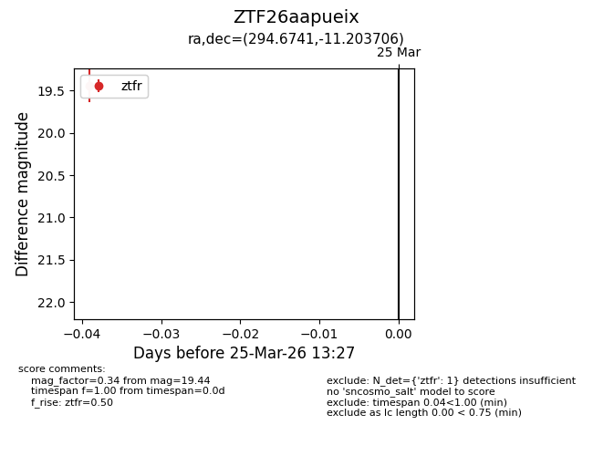
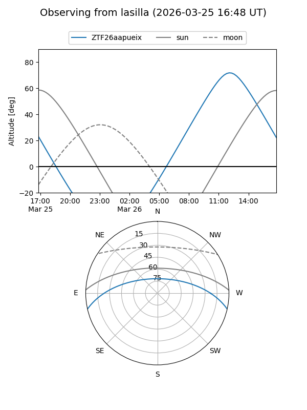
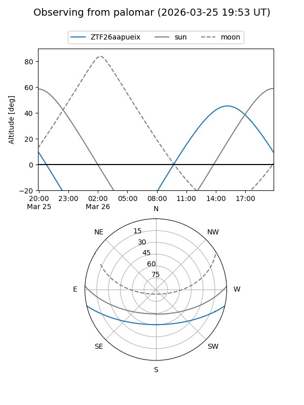

ZTF26aapueix
Target ZTF26aapueix at 2026-03-25 13:29
Aliases and brokers:
FINK: link
Lasair: link
ALeRCE: link
alt names
ZTF26aapueix (ztf,fink_ztf)
Coordinates:
equatorial (ra, dec) = 294.6741,-11.20371
equatorial (HMS+DMS) = 19:38:41.79,-11:12:13.34
galactic (l, b) = (28.0896,-15.50640)
Flags:
Photometry:
last ztfr=19.44
1 ztfr detections
Lightcurve

Visibility


Additional plots